CMD Methods Pack
Ik heb als stageopdracht een redesign gedaan van de CMD Methods Pack website, hier heb ik de huisstijl en layout van de website voor aangepast. Tevens heb ik een Design System gemaakt voor dit project waar de rest van mijn teamleden ook mee werkte. De website werd door een medestudent die als developer in het project werkte gecodeert. Ik heb een klein beetje meegeholpen met het schrijven van de CSS. Tot slot heb ik gewerkt aan een nieuwe functie waarmee de gebruiker kaarten kan toevoegen aan een planner. Hier heb ik voornamelijk het UX en UI design voor gedaan.
CMD Methods Redesign
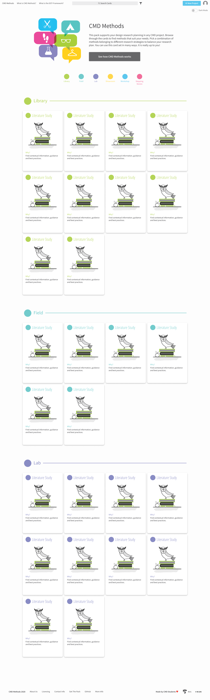

 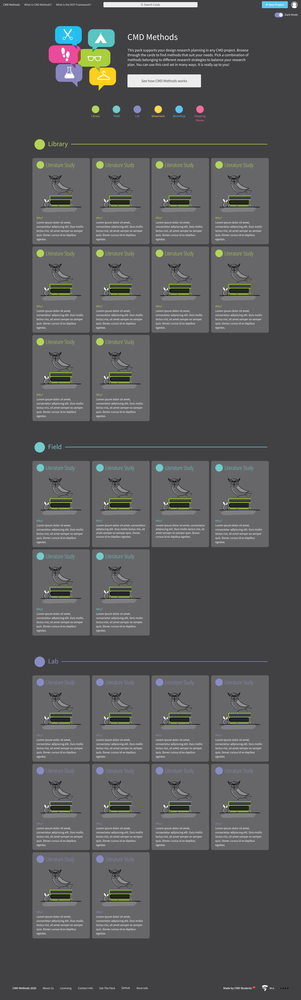
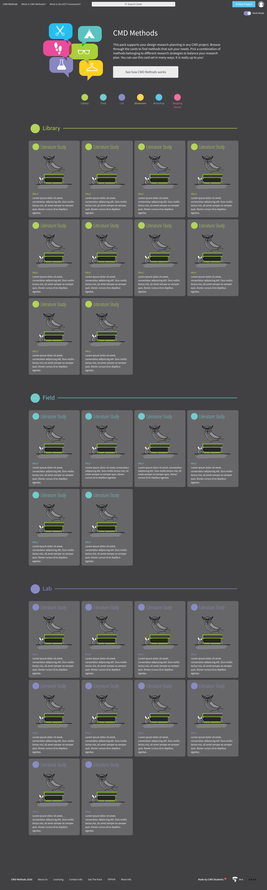
Planner functie
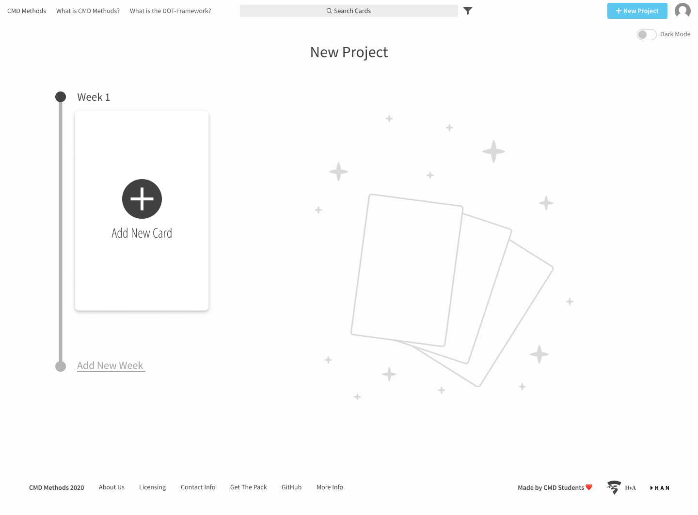
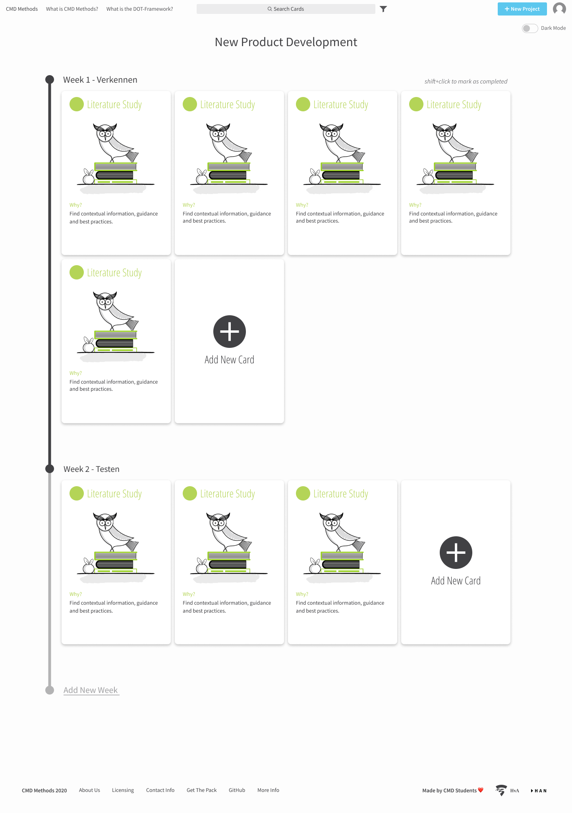
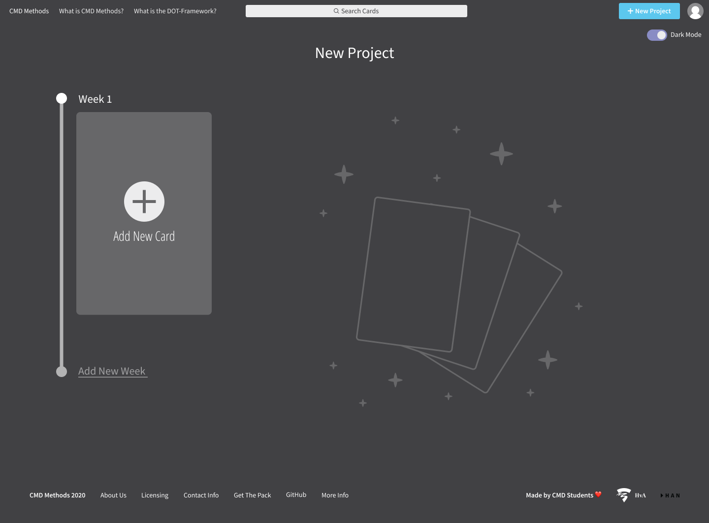
Design System
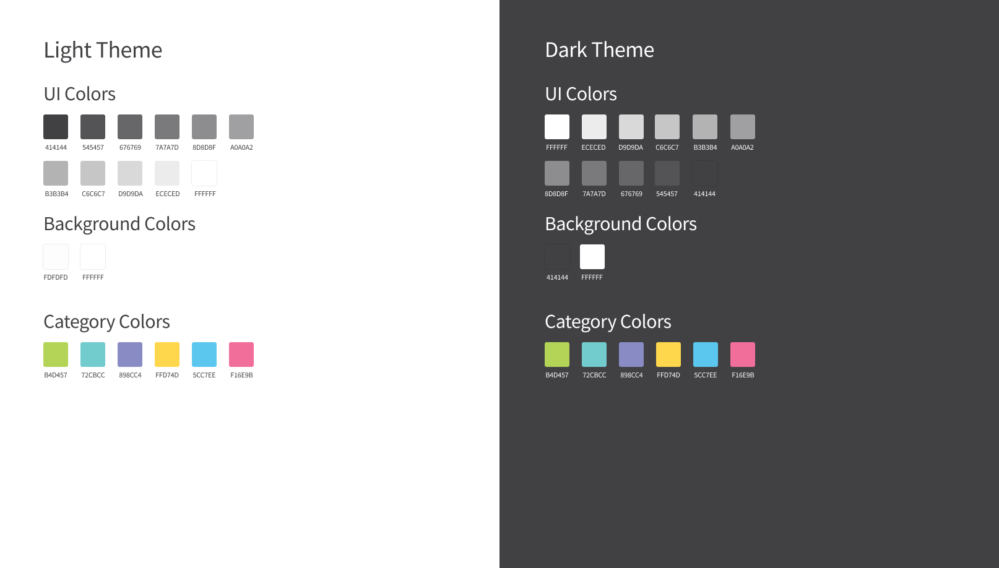
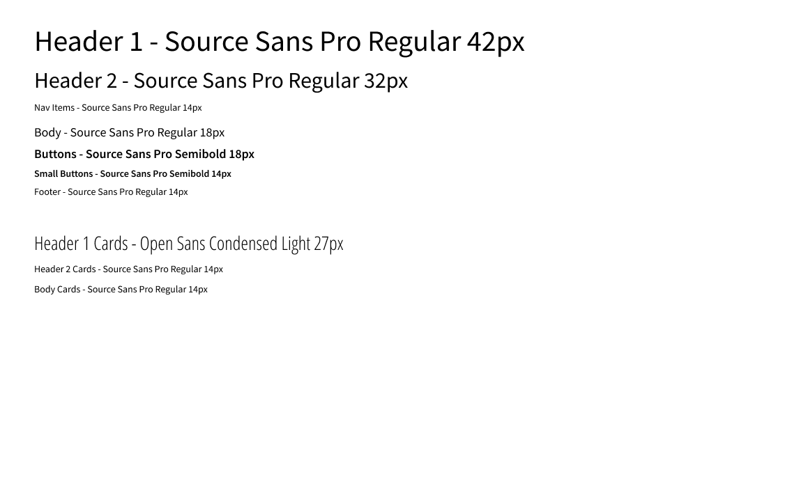
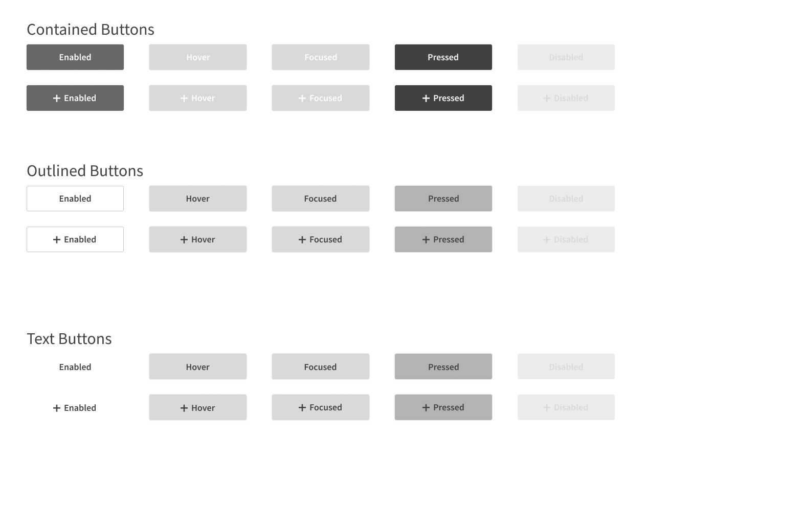
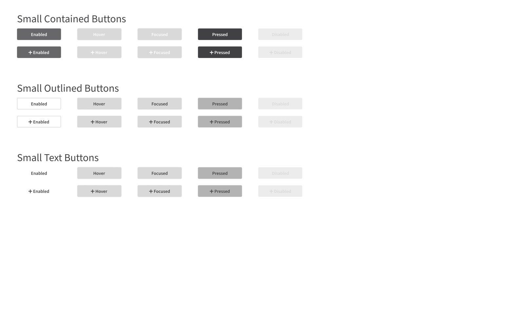
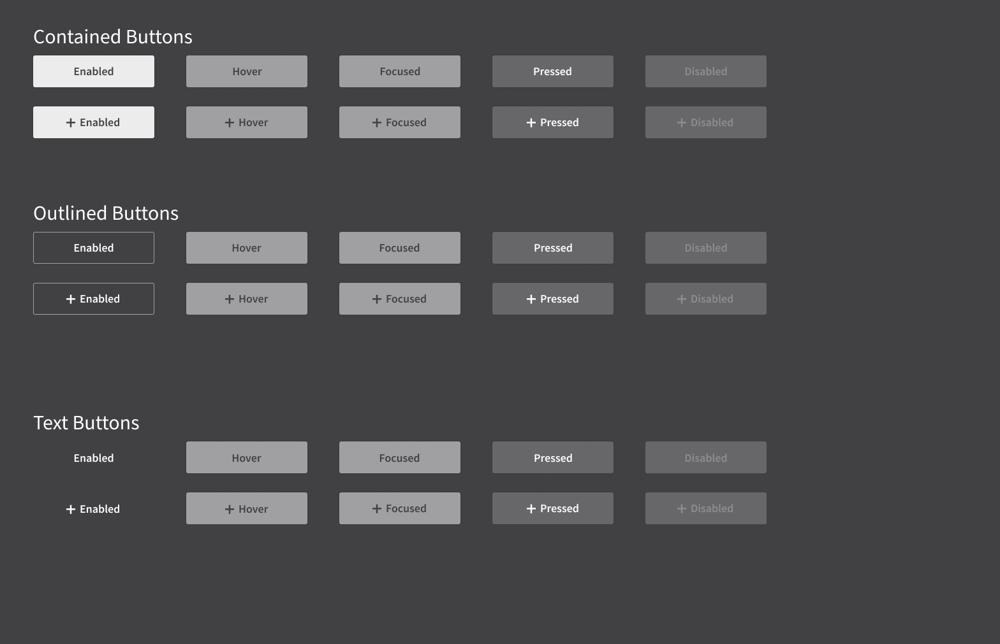
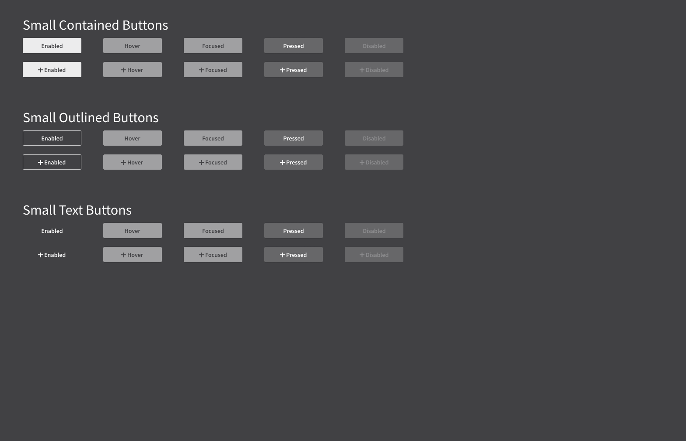
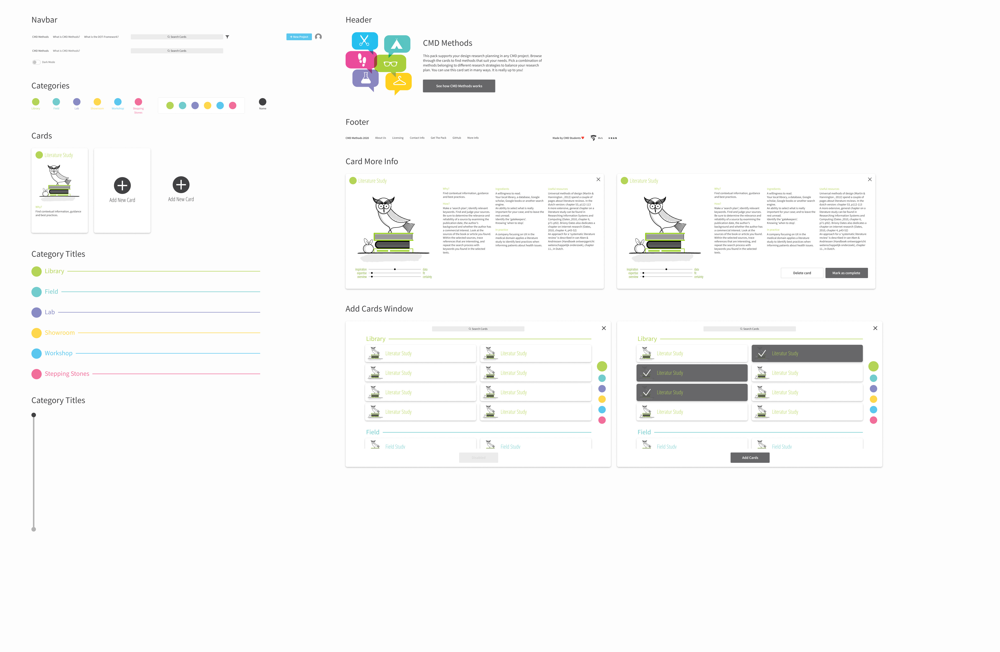
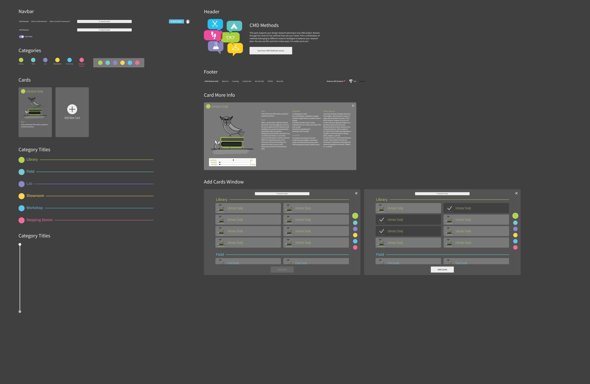